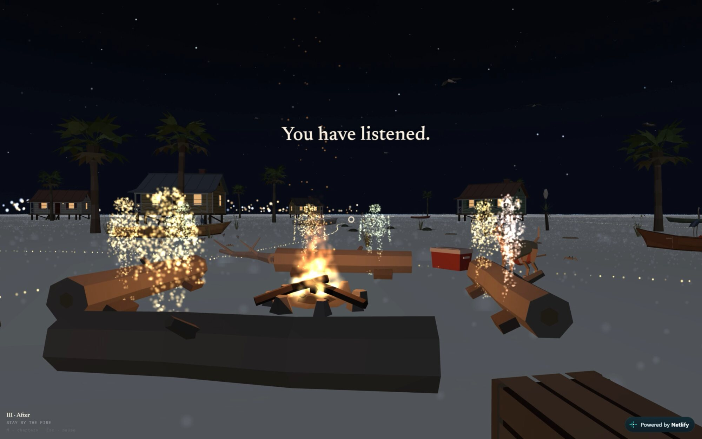
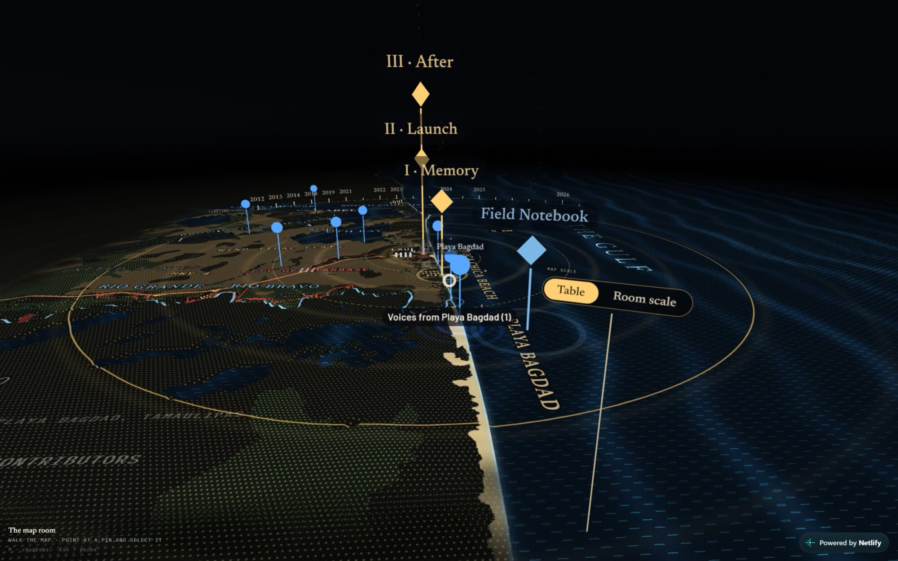
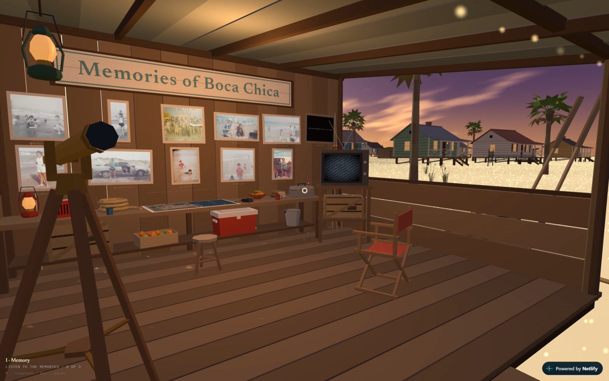
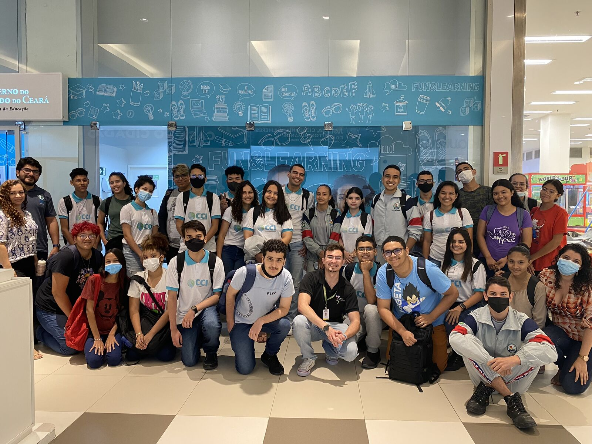
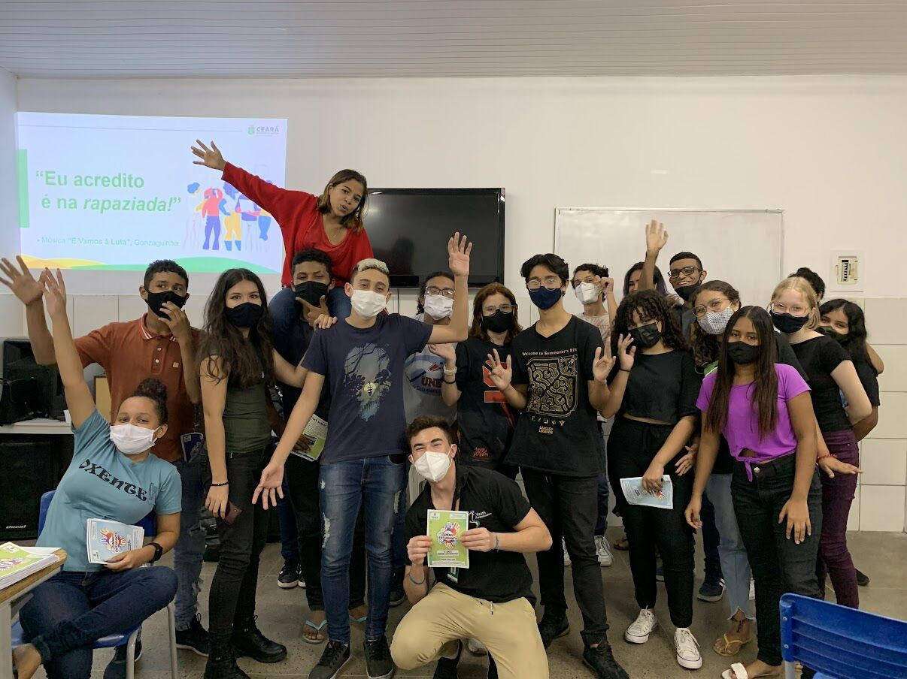

2026–2028 · XR · Documentary
The Sound of a Sacrifice Zone
Director · Producer · Writer
A room-scale VR documentary on a border community resisting erasure where SpaceX's Starship program meets the coast.
US$224K production budget, premiere 2028


Social & Content
Campaigns, vertical video and communication systems that reached millions of views.
2026 · Journalism · Social
Venice Immersive 2026
Digital Media & Content Producer
Picked by ASU NEM to cover Venice Immersive. Shot, edited and delivered photo and short-form video over 12 days on site.
12 days on site at La Biennale
2026 · Journalism · Social
USC Content Creators Academy
Writer · Director · Editor
Content strategy and vertical explainers on environmental journalism, built in USC Annenberg workshops on AI, ethics and audience.
2025–26 · Social
Brazil Conference at Harvard & MIT '26
Organizer of General Communications & Digital Marketing
Ran in-house video and design for a Harvard & MIT conference with 50+ speakers and 1,200 attendees.
6.2M views in 7 months
2026 · Social
The Wanderers
Scriptwriter · Animator · Graphic Designer · Editor
Video storytelling for Daniela Gerson's book on exile, memory and migration, built from family archives and her own account.


Social Impact2018–25 · Impact · Social
ImpactaJovem Youth Mentorship Network
Social Projects & Mentorship Coordinator
Coordinated 1,000+ volunteers from every Brazilian state to deliver 5,700+ free mentorships to high school students.
5,700+ free mentorships
2023–25 · Social
Public Education Communication
Social Media Manager · Videomaker · Photographer · Designer
Three years running communication for 750+ public high schools and 350,000 students: 20+ campaigns and 90+ videos a year.
350,000 students reached
2024 · Journalism · Social
G20 & Global Education Meeting
Producer · Camera · Editor · Community Organizer
Recruited and trained 50 public-school students into a newsroom that covered the G20 in Brazil.
500K+ people reached by 20+ pieces
2024 · Social
School Uniform Design Contest
Production · Script · Camera · Design · Editing
Statewide campaign for a student-led uniform design contest, built in the visual language teenagers already used.
1.23M views across 4 pieces